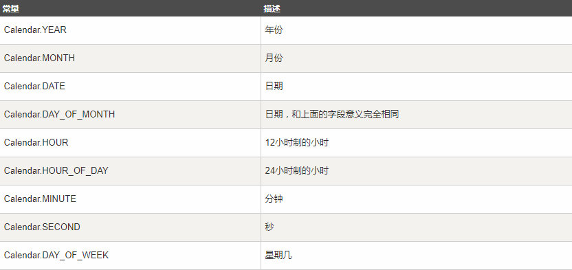

数据类型
基本数据类型
- byte (-128 , 127): 8位,用在大型数组中节约空间，主要代替整数，因为 byte 变量占用的空间只有 int 类型的四分之一
- short (-2^15 , 2^15 - 1): 16位
- int (2^-31 , 2^31 - 1 ) : 32位 , 一般地整型变量默认为 int 类型
- long (-2^63 , 2^63 - 1) : 64位，长整数 ，默认值 0L
- float : 单精度，32位，默认0.0f ， 不能表示精确的值，如货币
- double : 双精度 ， 64位 ， 默认0.0d , 不能表示精确的值
- boolean : true / false , 默认值false
- char : 16位Unicode字符 ， 可以存储任意字符
引用数据类型
- 对象、数组等都是引用数据类型，引用类型指向一个对象
- 所有引用类型的默认值都为null
数据类型转换
- 不能对boolean类型进行类型转换。
- 不能把对象类型转换成不相关类的对象。
- 在把容量大的类型转换为容量小的类型时必须使用强制类型转换。
- 转换过程中可能导致溢出或损失精度
- 浮点数到整数的转换是通过舍弃小数得到，而不是四舍五入
public class QiangZhiZhuanHuan{
public static void main(String[] args){
int i =128;
byte b = (byte)i; // 损失精度
(int)23.7 == 23; // true 舍弃小数转换
char c1='a';//定义一个char类型
int i0 = c1;//char自动类型转换为int
int i1 = 123;
byte b = (byte)i1;//强制类型转换为byte
System.out.println("int强制类型转换为byte后的值等于"+b);
}
}对象和类
类: 是一个模板，描述一类对象的行为和状态
- 一个类可以包含以下类型变量
- 局部变量: 在方法中定义的变量
- 成员变量: 方法体之外，类中的变量
- 类变量: static 修饰的成员变量
- 构造方法
- 一个类默认有一个无参构造方法，如果我们自己写了构造方法，默认构造将不再存在
对象: 类的一个实例，有状态和行为
- 创建对象
- 声明 : 对象名称和对象类型
- 实例化 : 使用关键字new创建对象
- 初始化 : 调用构造方法初始化对象
public class Dog{
static String breed; // 类变量/静态变量
int age; // 成员变量
void barking(){
int a = 1 ; // 局部变量
}
public Dog(int age){
// 这个构造器仅有一个参数：age
}
public static void main(String[] args){
// 下面的语句将创建一个Dog对象
Dog dog = new Dog( "d" );
}
}修饰符
访问控制修饰符
- public : 对所有类可见
- protected : 对同一包内的类和所有子类可见
- default : 默认，什么都不写，同一包内可见
- private : 同一类中可见
重写时子类的权限修饰符必须和父类相同或者更高
非访问控制修饰符
- static : 修饰类方法和类变量。
- 静态变量: 用来声明独立于对象的变量，无论实例化多少次，静态变量只有一份拷贝
- 静态方法: 独立于对象的方法，只能使用静态变量
- final : 用来修饰类、方法和变量，final 修饰的类不能够被继承，修饰的方法不能被继承类重新定义，修饰的变量为常量，是不可修改的。
- final 类不能被继承，没有类能够继承 final 类的任何特性。
- final 修饰的实例变量必须显式指定初始值。变量一旦赋值后，不能被重新赋值
- final 修饰符通常和 static 修饰符一起使用来创建类常量。
- abstract : 用来创建抽象类和抽象方法。
- 抽象类不能用来实例化对象，声明抽象类的唯一目的是为了将来对该类进行扩充。
- 一个类不能同时被 abstract 和 final 修饰。
- 抽象方法是一种没有任何实现的方法，该方法的的具体实现由子类提供。
- synchronized : 用于线程的编程。
- synchronized 关键字声明的方法同一时间只能被一个线程访问。
- transient : 序列化的对象包含被 transient 修饰的实例变量时，java 虚拟机(JVM)跳过该特定的变量。
- volatile : volatile 修饰的成员变量在每次被线程访问时，都强制从共享内存中重新读取该成员变量的值。而且，当成员变量发生变化时，会强制线程将变化值回写到共享内存。这样在任何时刻，两个不同的线程总是看到某个成员变量的同一个值。
继承
继承主要解决的问题是 : 共性抽取
- java语言是单继承的,一个类的直接父类只能有一个
- java语言可以多级继承，class A extends B extends C {},继承的最顶端是java.lang.Object类
- 一个子类的直接父类是唯一的，但是一个父类可以拥有很多子类
重写(Override) : 在继承的关系中，方法的名称一样，参数列表也(一样)
重载(Overload) : 方法名称一样，列表参数（不一样）
重名情况
- 局部变量，直接写
- 本类变量，this.变量名
- 父类变量，super.变量名
- 方法重名: 创建的对象是谁，就优先用谁，如果没有就向上查找
- 无论是成员方法，还是成员变量，都是向上查找，绝对不会向下查找
继承关系的构造函数执行：
- 1.子类构造方法中有一个默认隐含的super()调用，所以父类先执行，子类后执行
- 2.可以通过super关键字来调用父类重载构造
- 3.super的父类构造调用，必须是子类的第一个语句，不能一个子类构造调用多次super构造(super只能有一个)
this也能用来在构造中调用其他构造，也必须是第一个语句，不能喝super同时调用，也不能执行多个构造。
抽象类
抽象类: 抽象方法所在的类，必须是抽象类，在class之前加上abstract即可
抽象方法: 就是加上abstract关键字，然后去掉大括号，直接分号结束
- 抽象类不能之间new使用，必须有子类继承父类，new子类来使用
- 子类必须覆盖重写父类所有的抽象方法
- 抽象类可以有构造方法，供子类创建对象时，初始化父类成员使用
- 抽象类中不一定包含抽象方法，但是抽象方法必须在抽象类中
- 抽象类的子类必须重写父类的所有抽象方法，否则该子类必须是一个抽象类
- 构造方法，类方法（用 static 修饰的方法）不能声明为抽象方法。
public abstract class Employee{ // 抽象类 public abstract void mailCheck(); // 抽象方法 } public class Salary extends Employee{} // 子类继承父类
接口
接口就是一个类的公共规范
接口中可以包含以下内容
- 常量(java7 jdk)
- 抽象方法(java7 jdk)
- 默认方法(java8 jdk)
- 静态方法(java8 jdk)
- 私有方法(java9 jdk)
注意事项
- 接口中的抽象方法，修饰符必须是默认的两个关键字，public abstract
- 如果实现类没有覆盖重写接口中所有的抽象方法，那么这个实现类自己就必须是抽象类
- 接口内是没有静态代码块的，也没有构造方法的
- 一个类的直接父类是唯一的，但是一个类是可以同时实现多个接口的
- 格式: public class MyClass implements MyInterfaceA, MyInterfaceB{}
- 如果实现类所实现的多个接口中存在重复的抽象方法，那么只需要覆盖重写一次即可
- 如果实现类所实现的多个方法中存在重复的默认方法，那么实现类一定要对冲突的默认方法进行覆盖重写
- 一个类的直接父类方法如果和接口默认方法重复，那么会优先使用父类的方法
- 接口与接口之间是多继承的
- 多个父接口中的抽象方法如果重复是可以的，如果多个父接口中的默认方法重复，那么子接口必须进行默认方法的覆盖重写[default关键字必须带]
// 定义接口
interface Animal {
public void eat();
public void travel();
}
// 实现接口
public class MammalInt implements Animal{
// 重写接口抽象方法
public void eat(){
System.out.println("Mammal eats");
}
public void travel(){
System.out.println("Mammal travels");
}
// 自己独有的方法
public int noOfLegs(){
return 0;
}
public static void main(String args[]){
MammalInt m = new MammalInt();
m.eat();
m.travel();
}
}接口的继承： 一个接口能继承另一个接口，和类之间的继承方式比较相似。接口的继承使用extends关键字，子接口继承父接口的方法。
- 接口可以是多继承的
- 格式: public interface Hockey extends Sports, Event
标记接口: 最常用的继承接口是没有包含任何方法的接口。
- 简单形象的说就是给某个对象打个标（盖个戳），使对象拥有某个或某些特权。
标记接口作用:
- 建立一个公共的父接口
- 向一个类添加数据类型
Date类
构造函数
- Date() : 获取当前系统的日期和时间
- Date(long date) : 传递毫秒值，将毫秒值转换成系统的日期时间
成员方法
- long getTime() : 返回自 1970 年 1 月 1 日 00:00:00 GMT 以来此 Date 对象表示的毫秒数。
SimpleDateFormat类 : 允许自定义时间格式
- String format(Date date) : 按照指定的模式把date日期，格式化为符合模式的字符串
- Date parse(String source) : 将符合模式的字符串，解析为date日期
- DateFormat是一个抽象类，不能直接创建对象使用，可以用DateFormat的子类(java.text.SimpleDateFormat)
parse方法声明了一个异常ParseException解析异常，如果字符串和构造方法的模式不一样，那么程序就会抛出异常.解决: 要么throws继续声明异常，要么try catch自己处理异常
import java.util.*;
import java.text.*;
public class DateDemo {
public static void main(String args[]) {
Date dNow = new Date( );
SimpleDateFormat ft = new SimpleDateFormat ("yyyy-MM-dd hh:mm:ss");
System.out.println("当前时间为: " + ft.format(dNow));
}
}Calendar类
- Calendar类是一个抽象类，在实际使用时实现特定的子类的对象，创建对象的过程对程序员来说是透明的，只需要使用getInstance方法创建即可。
Calendar c = Calendar.getInstance();//默认是当前日期
Calendar c1 = Calendar.getInstance();
c1.set(2009, 6 - 1, 12); // 获取指定日期的Calendar对象Calendar类对象字段类型

//Calendar类对象信息的设置
c1.set(Calendar.YEAR,2008);
c1.set(Calendar.DATE,10);
//Add设置
c1.add(Calendar.DATE, 10);// 把c1对象的日期加上10，也就是c1也就表示为10天后的日期，其它所有的数值会被重新计算
//Calendar类对象信息的获得
Calendar c1 = Calendar.getInstance();
// 获得年份
int year = c1.get(Calendar.YEAR);
// 获得月份
int month = c1.get(Calendar.MONTH) + 1;
// 获得日期
int date = c1.get(Calendar.DATE);
// 获得小时
int hour = c1.get(Calendar.HOUR_OF_DAY);
// 获得分钟
int minute = c1.get(Calendar.MINUTE);
// 获得秒
int second = c1.get(Calendar.SECOND);
// 获得星期几（注意（这个与Date类是不同的）：1代表星期日、2代表星期1、3代表星期二，以此类推）
int day = c1.get(Calendar.DAY_OF_WEEK);Collection集合
java.util.Collection : 所有单列集合的最顶层接口，里面定义了单列集合的共性方法，单列集合都可以使用
- 数组的长度是固定的，集合的长度是可变的
- 数组可以存储基本类型，集合不可以
共性方法
- public boolean add(E e) : 把给定的对象添加到集合中
- public boolean remove(E e) : 把给定的元素在集合中删除
- public boolean contains(E e) : 判断集合中是否包含给定的元素
- public boolean isEmpty() : 集合是否为空
- public int size() : 返回集合元素的个数
- public Object[] toArray() : 把集合中的元素，存储到数组中
- public void clear() : 清空集合内的所有元素
迭代器 : java.util.Iterator接口
两个常用方法
- boolean hasNext() 如果仍有元素可以迭代，则返回true
- E next() 取出集合中下一个元素
因为是一个接口，我们只能使用其实现类，获取实现类的方式特殊: Collection中有一个Iterator(),这个方法返回迭代器实现类
使用步骤
- 1.使用集合方法获取实现类，使用Iterator接口接受(多态)
- 2.使用接口方法hasNext方法判断是否有下一个元素
- 3.使用next方法取出下一个元素
原理:
- 获取迭代器对象，并且把指针放在索引-1的位置
- next方法会取出下一个元素，并且把指针往后移动一位
增强for循环: 底层使用的也是迭代器，使用for循环的格式，简化了迭代器的书写,Collection extends Iterator
,所有的单列集合都可以使用foreach // 格式 for ( 集合/数组的数据类型 变量名: 集合名/数组名){ // 循环操作 }示例
public class Demo01Collection { public static void main(String[] args) { Collection<String> arr = new ArrayList<>(); arr.add("姚明"); arr.add("詹姆斯"); arr.add("科比"); Iterator<String> it = arr.iterator(); while (it.hasNext()){ System.out.println(it.next()); } System.out.println("============"); for (String item: arr){ System.out.println(item); } } }
java多线程
创建线程的两种方式
创建Thread类的子类
- 1、创建Thread的子类
- 2、子类重写Thread类的run方法，设置线程任务
- 3、创建子类对象
- 4、调用Thread类的start方法，开启新线程，执行run方法
实现Runnable接口
- 1、创建一个Runnable接口的实现类
- 2、在实现类中重写run方法，无参数的，设置线程任务
- 3、创建一个Runnable接口的实现类对象
- 4、创建Thread类对象，构造方法传递Runnable接口的实现类对象
- 5、调用Thread的start方法，开启线程的run方法
两种方式对比，Runnable方式的好处
- 1、避免了单继承的局限性
- 2、增强了程序的扩展性，减低了程序的耦合性（解耦）
常用方法
- String getName(): 获取该线程的名称
- static Thread currentThread() : 返回当前正在执行的线程对象
- void setName(String name): 设置线程名称
- public static void sleep(long mills) : 使当前线程暂时暂停执行，时间结束后继续执行
// 使用MyThread类
public class Demo01Thread {
public static void main(String[] args) {
MyThread mt = new MyThread();
// 设置线程名称
mt.setName("小贾");
// 调用新线程
mt.start();
// 构造方法设置线程名称
MyThread m = new MyThread("小一");
m.start();
for (int i = 0 ; i < 20 ; i++){
System.out.println(i);
try {
Thread.sleep(1000);
} catch (InterruptedException e) {
e.printStackTrace();
}
}
}
}
// MyThread类
package cn.jiatengda.day09.demo05;
public class MyThread extends Thread {
public MyThread() {
}
public MyThread(String name) {
super(name);
}
@Override
public void run() {
// 获取线程的名称
System.out.println(getName());
// System.out.println(Thread.currentThread().getName());
}
}
// 使用Runnable接口匿名内部类的方式创建线程
package cn.jiatengda.day09.demo05;
public class Demo02Thread {
public static void main(String[] args) {
new Thread(){
@Override
public void run() {
System.out.println("thread1");
}
}.start();
//Runnable接口
new Thread(new Runnable() {
@Override
public void run() {
System.out.println("thread2");
}
}).start();
}
}线程安全问题 : 多线程访问了共享的数据，会产生安全问题
线程安全问题是不能出现的，共享数据时，一个线程执行时不管是否失去执行权，其他共享想成就只能等待，保证使用一个线程运行
解决线程安全问题
- 1.同步代码块
- 1).通过代码块中的锁对象，可以使用任意对象
- 2).但是必须保证多个线程中使用的锁对象是一个
- 3).锁对象的作用: 把同步代码块锁住，只让一个线程在同步代码块中执行
- 2.同步方法
- 1). 也会把代码内部的代码锁住，只让一个线程执行，同步锁就是调用方法的对象，也就是this
- 2). 静态同步方法的锁对象不能是this，因为this是创建对象之后产生的，静态方法优先于对象，静态方法的锁对象是本来写class文件对象
- 3.Lock锁(一个接口)
- 1.在成员位置创建一个ReentrantLock类对象
- 2.在可能出现安全问题的代码前，调用Lock接口中的方法lock获取锁
- 3.在可能出现安全问题的代码后，调用Lock接口中的方法unlock释放锁
Lock接口中的方法
- void lock() : 获取锁
- void unlock() : 释放锁
public class Demo01ThreadSafe {
public static void main(String[] args) {
// 创建Runnable 实现类对象
RunnableImpl r = new RunnableImpl();
// 创建Thread类对象
Thread t0 = new Thread(r);
Thread t1 = new Thread(r);
Thread t2 = new Thread(r);
t0.start();
t1.start();
t2.start();
}
}
// 使用锁解决卖票问题
package cn.jiatengda.day09.demo05;
import java.util.concurrent.locks.Lock;
import java.util.concurrent.locks.ReentrantLock;
public class RunnableImpl implements Runnable {
// 定义共享票源
private int ticket = 100;
// 创建锁对象
Object obj = new Object();
Lock l = new ReentrantLock();
@Override
public void run() {
// 使用循环，让卖票重复执行
while (true){
synchronized (obj){
// l.lock();
if (ticket > 0 ){
// 提高出现的几率 ，睡眠一下
try {
Thread.sleep(10);
} catch (InterruptedException e) {
e.printStackTrace();
}
System.out.println(Thread.currentThread().getName() + "正在卖第" + ticket + "张票");
ticket -- ;
}
// l.unlock();
}
// payTicket()
}
}
public synchronized void payTicket(){
if (ticket > 0 ){
// 提高出现的几率 ，睡眠一下
try {
Thread.sleep(10);
} catch (InterruptedException e) {
e.printStackTrace();
}
System.out.println(Thread.currentThread().getName() + "正在卖第" + ticket + "张票");
ticket -- ;
}
}
}等待唤醒机制:就是在一个线程进行了规定操作后，就进入等待状态（wait（））， 等待其他线程执行完他们的指定代码过后 再将其唤醒（notify（））。
等待唤醒机制是管理多个线程执行顺序方案，上述案例是多个线程抢占资源，而等待唤醒机制可以让我们操作多个线程的执行先后顺序
- wait() : 进入一直等待状态，知道被唤醒
- wait(long l) : 计时等待 和sleep 一样，时间结束自然唤醒
- notify() : 唤醒等待时间长的一个线程
- notifyAll() : 唤醒所有的此对象上等待的线程